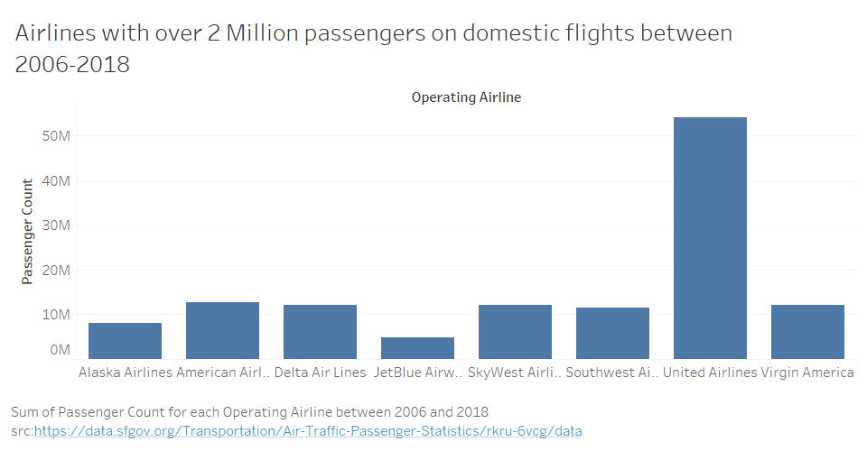

Bar Chart
Tableau and d3 graphs
Home
Data
Visualizations
Line Chart
Area Chart
Bar Chart
Bar Chart Tableau and D3 Visualization

Airlines with over 2 Million passengers on domestic flights between 2006-2018
Data acquired from
data.sfgov.org
on February 7, 2020.